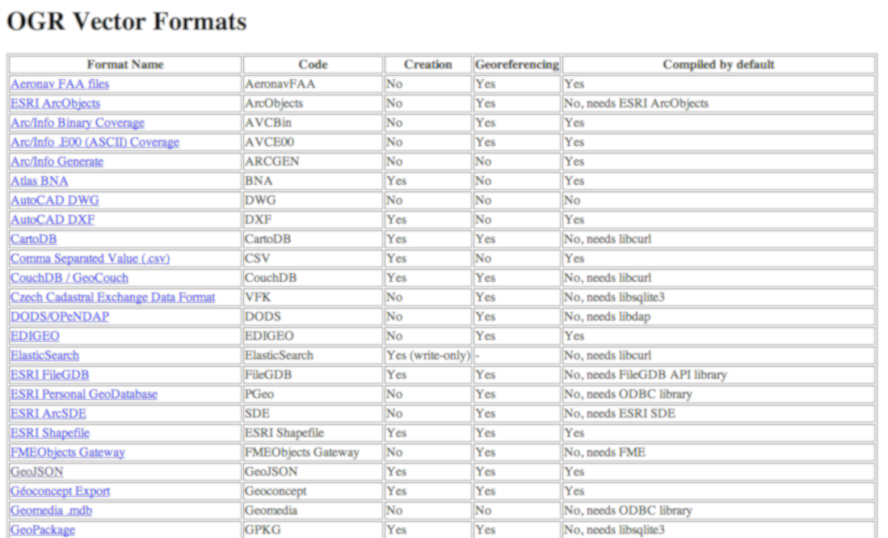
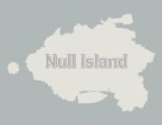
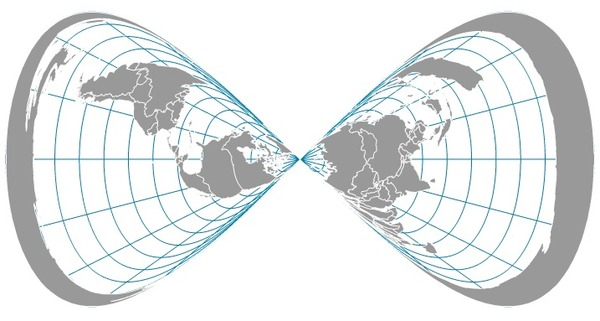
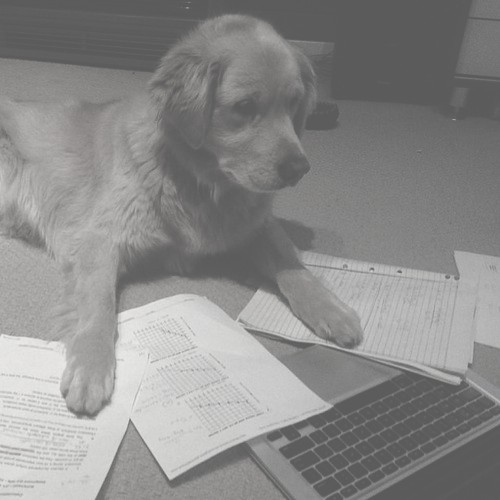
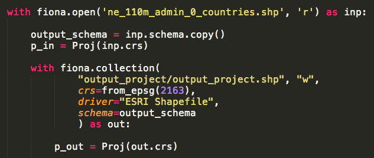
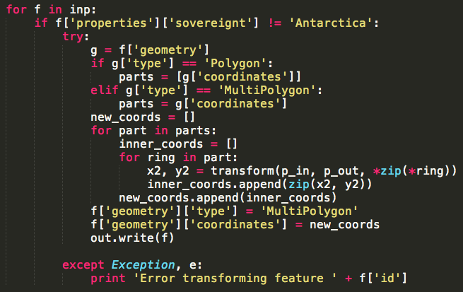
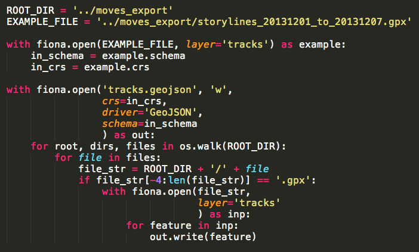
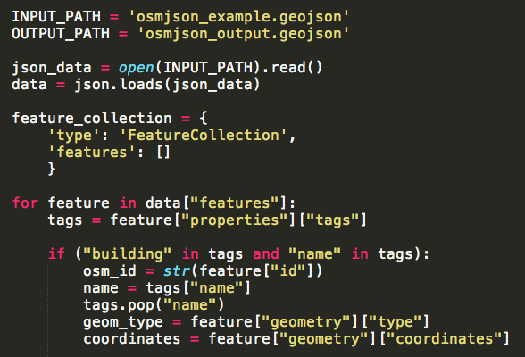
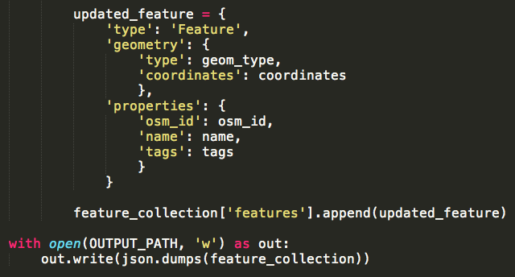
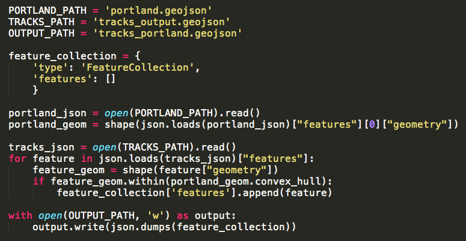

after this finishes loading, use the arrow keys to change slides or
view this presentation in markdown with notes herewhy?

I
<3 maps, but making them can be
a pain
the worst part is
getting data to cooperate
it is usually
not in the
format you need
has several obvious errors
is split up into 50
different files
is in a
completely
different projection
than what you need
and has no
metadata,
so you have
no idea what you're even looking at
you could point and click all day in
out-of-the-box
GIS software,
or you could use Pythonabout (vector) geodata:
- made up of one or several files
- with a coordinate system/projection
- made up of one or several "layers" of data
- each of which includes 1+ features
- each feature has geometry:
- type: point/line/polygon/etc.
- coordinates
- each feature also has various other attributes/properties
Python packages:convert and filter your data with
Fiona
example: converting country shapefile data from
Natural Earth to GeoJSON format

3. enjoy!
another Python package:combine Fiona with
PyProj to change the projection
1. 
... 

2. enjoy!
one more
Fiona example:
assemble a folder of
GPX tracks into
a single GeoJSON file
1. export some data in GPX format
2. 

3. enjoy!
before we go any further,
let's talk about
GeoJSON:*
JSON for geodata* easy to use for
web mapping* easy to
parse with Pythonall you need to do is
treat it like a dictionary
1. download some data

3. process
...

4.
enjoy!or do this with CSV/XML data:
just put it in a dictionary and assemble valid GeoJSON with only the features and attributes that you want.
if you have a lot of data, switch to reading and writing line-by-line.
because it's just a dictionary, it's easy to
create tests for the data:
- check for required keys
- check the type of each key's value
- check against known values
- check the structure
- check for valid geometry
this is important if your system expects
a very particular format,
while your data comes from
a variety of sources
spatial analysis and
data manipulation
with
Shapely
tons of examples in the manual:
validate and construct geometry, simplify, buffer, convex hull, envelope, offset, merge, union, interpolate, create polygons from lines, get centroid or representative point, bounds, area, or length, the distance between two objects, check if they are equal or almost equal, get the difference or symmetrical difference, see if one contains the other, if they intersect or touch, work with 3D data and Numpy, etc.
example:
keep only
the GPX tracks
in Portland
1. get Portland or your city as GeoJSON
2. 

3. enjoy!
another option for geoprocessing without
GIS software:
PostGIStalk to it with
Psycopg2 or your Python PostgreSQL tool of choice
finally, GIS software <3s Python
QGIS:
http://www.qgis.org/en/docs/pyqgis_developer_cookbook/intro.html

console, module, plugins, and development